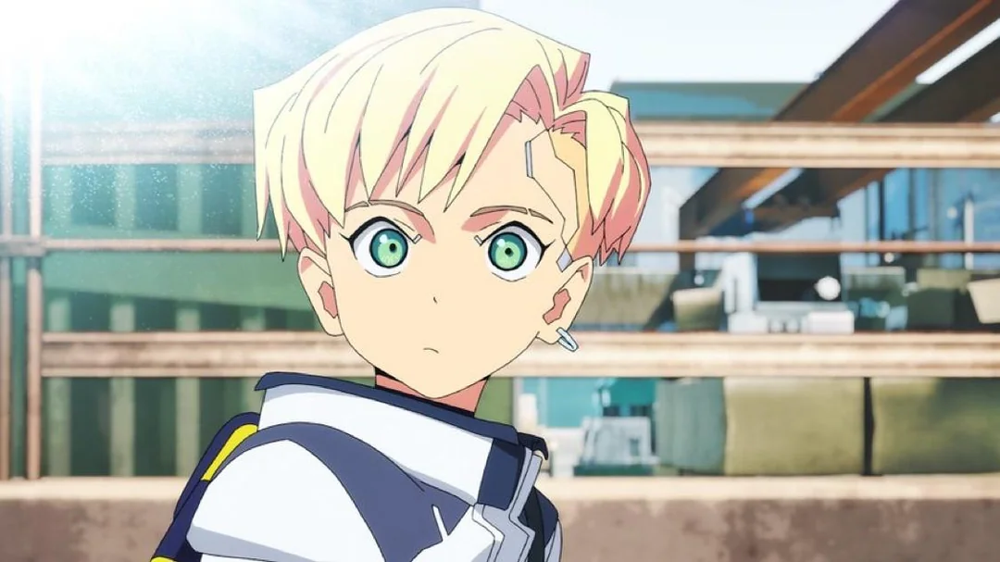
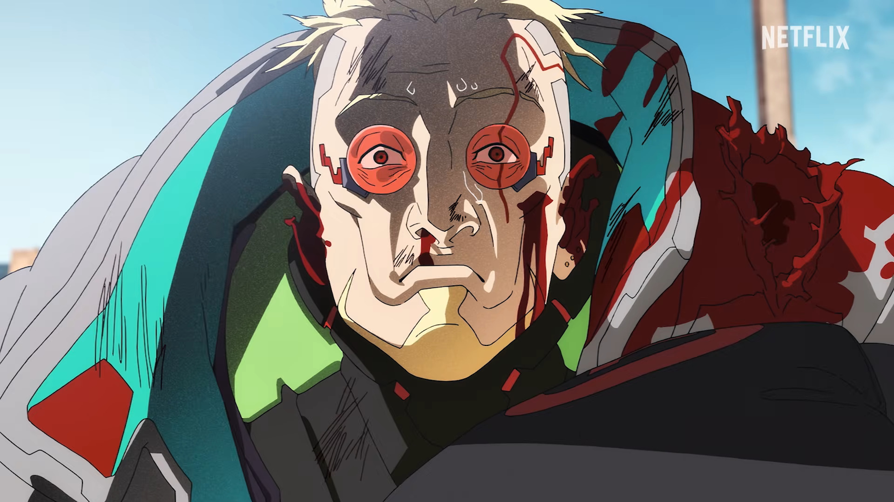
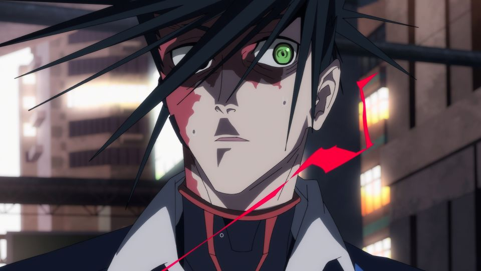
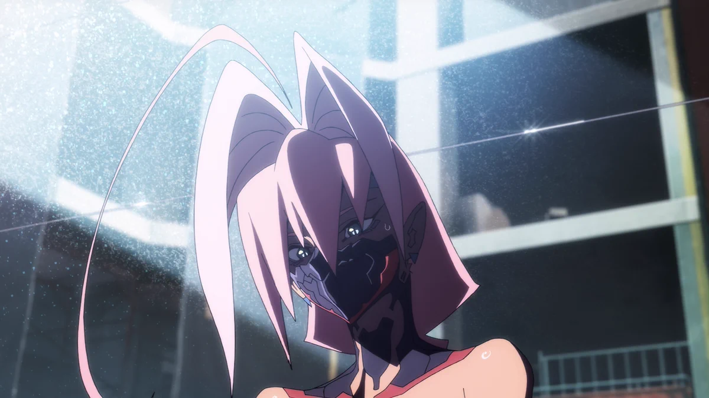

|
|
MENU |
!BREAKING NEWS!
TENHAM CUIDADO! UM NOVO GRUPO DE RUNNERS ESTÃO ATIVOS NA CIDADE !
Quem são eles?Roman Carax Obcecado em documentar a verdade, ele tem o costume de acompanhar a vida de outras pessoas como uma sombra. O problema é que ele logo descobre que, diferente de suas gravações favoritas, as histórias em Night City são brutais, bagunçadas e raramente têm um final feliz e limpo. Weak Kingsley Antes conhecido como "King" (Rei), ele é um mercenário (edgerunner) veterano que já esteve no topo, mas que agora vive à sombra de sua antiga glória. Com quase nenhum cromo restante, ele quer encontrar seu proposito. D edgerunner Um netrunner da Nação Cobra (Snake Nation) com habilidades técnicas extremamente afiadas e uma fome ainda maior por vingança. Ele está caçando o assassino que exterminou o seu clã. Talia Yang Ela tem um passado dividido: foi criada nas torres corporativas (Corpo), mas acabou sendo endurecida pelas garras da gangue Maelstrom. Ela é ferozmente independente e está profundamente mergulhada na cultura hiper-violenta e obcecada por implantes (cromo) da gangue. IRÃO MORRER
Após o fracasso do primeiro grupo de Edgerunners em destruir nossa corporação, estamos preparados para o segundo.
-NÓS DA ARASAKA IREMOS MATAR TODOS ELES- |
|
© 2026 Site da Arasaka. Todos os direitos reservados. Arasaka é a marca registra por Saburo Arasaka, passada para filho Yorinobu Arasaka de forma atípica. Desenvolvido apenas para fins lucrativos. Feito por Mark Stembark. |
|